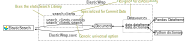

Descriptive: An Architectural View of The Paw¶
This section of the technical manual is intended to porvide high-level explanations and justifications for each of the major PAW components. The main purpose of this section is to provide context to the more specific issues discussed in the extension and maintainance sections.
Overview:¶
Component-based:¶

ElasticWrap internals:¶
Detailed sections on specific components:¶
On Kibiter¶
Kibiter is the custom Kibana extension Grimoirelab uses for data visualization. At time of delivery however kibiter requires an outdated version of ElasticSearch, and thus is not supported. In time this should be fixed however hence why it is still semi-included in the diagrams.